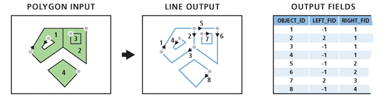

Causal Inference with Spatial Data
(ArcGIS 10 for Economics Research)
Lecture 7
Spatial RD Design
Masayuki Kudamatsu
31 August, 2018
Press SPACE to proceed.
To go back to the previous slide, press SHIFT+SPACE.
Today's road map
1. Econometrics for spatial RD design
2. Spatial RD examples
3. Geo-processing for spatial RD design
4. Calculate 3D polyline length
1. Econometrics for Spatial RD Design
What's unique about Spatial RD
Forcing variable: two-dimensional vector (i.e. coordinates)
Cutoff: boundary lines
$\Rightarrow$ How should we extend the standard RD design?
Approach 1: Scalar RD
\begin{align*} y_{i} = \beta T_{i} + \gamma Dist_i + \delta T_{i} Dist_i + \mu_s + \varepsilon_{i} \end{align*}
Project coordinates into distance to boundary ($Dist_i$)
- $Dist_i < 0$ for control areas
Approach 1: Scalar RD (cont.)
\begin{align*} y_{i} = \beta T_{i} + \gamma Dist_i + \delta T_{i} Dist_i + \mu_s + \varepsilon_{i} \end{align*}
Then use standard RD design w/ boundary segment FE ($\mu_s$)
- $i$'s nearest point on boundary $\in$ Segment $s$
Approach 1: Scalar RD (cont.)
w/o boundary segment FE, you compare point $i$ to $k$ in diagram below

(Figure 3 of Keele & Titiunik 2014)
Limitations of Scalar RD
RD polynomials may not be zero across all boundary points
\begin{align*} y_{i} = \beta T_{i} + \gamma Dist_i + \delta T_{i} Dist_i + \mu_s + \varepsilon_{i} \end{align*}
$\Rightarrow$ Cannot estimate heterogeneous treatment effects at various boundary points
(Figure 6 of Keele & Titiunik 2014)
Approach 2: Boundary RD
\begin{align*} y_{i} = \beta T_{i} + \boldsymbol{x}'_i\boldsymbol{\gamma} + T_{i}\boldsymbol{x}'_i\boldsymbol{\delta} + \mu_n + \varepsilon_{i} \end{align*}
Use coordinates ($\boldsymbol{x}_i$) for RD polynomials
- Not zero at boundary
Approach 2: Boundary RD (cont.)
\begin{align*} y_{i} = \beta T_{i} + \boldsymbol{x}'_i\boldsymbol{\gamma} + T_{i}\boldsymbol{x}'_i\boldsymbol{\delta} + \mu_n + \varepsilon_{i} \end{align*}
Pick (equally-spaced) points on boundary (denoted by $n$)
Assign each observation to its nearest boundary point, to define $\mu_n$
Approach 2: Boundary RD (cont.)
\begin{align*} y_{i} = \beta T_{i} + \boldsymbol{x}'_i\boldsymbol{\gamma} + T_{i}\boldsymbol{x}'_i\boldsymbol{\delta} + \mu_n + \varepsilon_{i} \end{align*}
Treatment effect at boundary point $n$: given by
\begin{align*} \beta + \boldsymbol{x}'_n\boldsymbol{\delta} \end{align*}
See Chapter 2 of Zajonc (2012) (commonly cited as Imbens and Zajonc 2011) for more detail
Limitations to Boundary RD
Require lots of observations along the boundary
- Infeasible with sub-national district level data
Average treatment effect estimates: similar to scalar RD estimates anyway
Data compilation: cumbersome
- ArcGIS helps a lot, though
Treatment boundary
Tends to overlap with other boundaries
- Municipalities, school districts, electoral districts, etc.
$\Rightarrow$ Focus on segments where nothing else overlaps
(Figure 5 of Keele & Titiunik 2014)
2. Spatial RD Examples
Dell (2010)
Does forced labor system during Spanish colonial rule affect todya's living standards in Peru? If so, why?
Interesting?
- Yes, if why question is answered
- Lots of "history matters" papers already out there
Original?
- Focus on mechanism of long-run effect of history
- Pioneer in spatial RD design
- Findings go against well-known Engerman-Sokoloff hypothesis
Dell (2010) (cont.)
Mita
1573-1812: Spanish colonial rule forced 1/7 of adult male population in parts of Peru & Bolivia to work in the Potosi silver & Huancavelica mercury mines
Communities subject to mita: clearly defined geographically
Dell (2010) (cont.)
Data for outcomes
Household consumption in 2001
Heights of 6-9 years old students
Road lengths by districts
- We will calculate this later
Dell (2010) (cont.)
Data for intermediate outcomes
% rural population in hacienda (large land-holding) in 1689, 1845, 1940
Education in 1876, 1940, 2001
$\Rightarrow$ Allows to identify mechanisms
Dell (2010) (cont.)
Results
Mita areas: worse-off today
Historically, less educated & less unequal in land holding
$\Rightarrow$ Against Engerman Sokoloff hypothesis (e.g. Sokoloff & Engerman 2000)
Michalopoulos & Papaioannou (2014)

Ntnl govt quality $\Rightarrow$ development?
Look at ethnic homelands split by national boarders in Africa
- Segment FE = Ethnicity FE
Find no difference in nighttime light across border on average
Large heterogeneity across ethnic groups, though
Berger et al. (2016)
Does higher TV license fees increase evasion in Austria?
Exploit differences in fees across states
Focus on state borders where covariates are balanced

Gonzalez (2015)
Cellphone coverage $\Rightarrow$ Electoral fraud $\downarrow$ in Afghanistan
1000+ polling stations w/i 5km from coverage boundary
$\Rightarrow$ Boundary RD approach: feasible
Prepare for the rest of this lecture
1. Launch ArcMap 10 (it takes time)
2. Download the zipped dataset for Lecture 7
3. Save it to Desktop (C:\\Users\\yourname\\Desktop)
- Don't save in the remote server, which slows down ArcGIS
4. Right-click it and choose 7-Zip > Extract to "Lecture7\"
-
So the directory path will be:
C:\\Users\\yourname\\Desktop\\Lecture7
Prepare for the rest of this lecture (cont.)
Now in ArcMap's Catalogue Window:
5. Establish connection to data folder
- Right-click "Folder Connections"
- Select "Connect to Folder"
- Choose "Desktop > Lecture7"
6. Prepare the Model Builder
- Create a Model
- Save it as "models.tbx/exercises1-3" inside Lecture7
Coordinate system for Lecture 7 data
Now browse data in the Lecture7/input/ folder
What coordinate system do they use? (cf. Lecture 1)
Coordinate system for Lecture 7 data (cont.)
It's UTM Zone 18S (cf. Lecture 3)
$\Rightarrow$ Calculation of surface area and distance is straightforward
Always pay attention to the coordinate system of the spatial data you use
3. Geo-processing for Spatial RD Design
Spatial RD Design Data Generation
1. Attach treatment indicator to district polygons
2. Treatment boundary polylines
3. Boundary segment indicator & Distance to boundary
4. Visualize spatial RD plots
Exercise #1
Attach mita district indicator
Inputs:
1. StudyDistricts.shp (district polygons)
- District ID: dist_id
2. districts.txt (list of mita districts)
- District ID: dist_id
- Mita indicator: mita
Exercise #1 (cont.)
Geo-processing tools to be used for this exercise:
1. Table to Table
- Convert the table in text format into dBASE
- Otherwise Join Field does not work
2. Copy Features + Join Field
- Attach mita indicator to district polygons
- cf. Lecture 6 Exercise 4 Step 1
Exercise #1: Step 1
Table to Table
Input Rows: ...\Lecture7\input\districts.txt
Output Location: ...\Lecture7\temp
- Directory in which the output table is saved
Output Table: districts.dbf
Expression: leave it blank
- Can be used to keep only some rows
Field Map: leave as it is
Exercise #1: Step 2
Copy Features
Input Features: ...\Lecture7\input\StudyDistricts.shp
Output Feature Class: ...\Lecture7\temp\mita_districts.shp
Do not name the output as districts.shp
- Its attribute table will have the same file name as the output from Table to Table
Exercise #1: Step 2
Join Field
Input Table: mita_districts.shp
- Output from Copy Features
Input Join Field: dist_id
Join Table: districts.dbf
- Output from Table To Table
Output Join Field: dist_id
Join Fields: mita
Exercise #1 (cont.)
Now save and run the Model.
Browse the attribute table of the output
Is everything as expected?
Exercise #2
Mita boundary polyline
Geoprocessing tools:
1. Dissolve
- Create mita area polygon and non-mita area polygon
2. Polygon To Line + Select
- Convert polygons to their boundary polylines
- Then keep those tangent on the other polygons
Polygon To Line
(Image taken from ArcGIS Help on Polygon To Line) 
For treatment boundary polylines
$\Rightarrow$ LEFT_FID $\neq$ -1
Exercise #2: Step 1
Dissolve
Input Features: mita_districts.shp (2)
- Output from Join Field
Output Feature Class: ...\Lecture7\temp\mita_area.shp
Dissolve_Field(s): mita
Check "Create multipart features"
Now run the model and see how the output looks like
Exercise #2: Step 2
Polygon To Line
Input Features: mita_area.shp
- Output from Dissolve
Output Feature Class: ...\Lecture7\temp\polygon2line.shp
Check "Identify and store polygon neighboring information"
- If unchecked, each polygon becomes one polyline
Now run the model and see how the output looks like
Exercise #2: Step 3
Select
Input Features: polygon2line.shp
- Output from Polyline To Line
Output Feature Class: ...\Lecture7\temp\boundary.shp
Expression: "LEFT_FID" <> -1
- Enclose field name with " "
- <> means not equal to
Now run the model and see how the output looks like
Exercise #2 (cont.)
Alternative solution
1. Select with "mita" = 1
- Create a mita area polygon
2. Select with "mita" = 0
- Create a non-mita area polygon
3. Intersect with output type LINE
- Intersection of the two polygons will be kept as a polyline
- With output type INPUT, no feature will be created
Distance to boundary
Can now be calculated by Near tool with the boundary polyline as near feature
But we also need "boundary segment fixed effects that denote which of four equal length segments of the boundary is the closest to the observation’s district capital" (Dell 2010, p. 1870)
$\Rightarrow$ Split each boundary line by half
Exercise #3: Overview
Bounday segment fixed effects
Geo-processing tools:
1. Unsplit Line
- Convert each boundary into one polyline
- Necessary because Polygon To Line fails to create one polyline for the southern boundary...
2. Add Field + Calculate Field (cf. Lecture 5)
- Add midpoint coordinates
Exercise #3: Overview (cont.)
3. Make XY Event Layer + Copy Features
- Create midpoint point features
4. Split Line at Point
- Divide each boundary at midpoint
5. Copy Features + Near (w/ district capitals as input)
- Attach boundary segment indicator
- Calculate distance to boundary
Exercise #3: Step 1
Unsplit Line
Input Features: boundary.shp
- Output from Select
Output Feature Class: ...\Lecture7\temp\boundary_unsplit.shp
Now run the model and see how the output looks like
Exercise #3: Step 2
Midpoint coordinates
We will add two new fields
- One for midpoint longitude
- The other for midpoint latitude
$\Rightarrow$ Use Add Field + Calculate Field twice
Exercise #3: Step 2 (cont.)
Add Field
Input Table: boundary_unsplit.shp
Field Name: midpoint_X / midpoint_Y
- Or whatever you prefer (not exceeding 10 characters)
Field Type: DOUBLE
- We want to have the exact coordinate
Exercise #3: Step 2 (cont.)
Calculate Field
Input Table: boundary_unsplit.shp
- Output from Add Field
Field Name: midpoint_X / midpoint_Y
- Or the same as what you specified in Add Field
Expression: see next slide
Expression Type: PYTHON_9.3
position Along Line method
For midpoint_X:
!shape!.positionAlongLine(0.5,True).firstPoint.X
For midpoint_Y:
!shape!.positionAlongLine(0.5,True).firstPoint.Y
position Along Line method
For midpoint_X:
!shape!.positionAlongLine(0.5,True).firstPoint.X
For midpoint_Y:
!shape!.positionAlongLine(0.5,True).firstPoint.Y
0.5 for mid points
- Change this fraction for other points on polyline
- For multiple points, we can use loop over values in Python (cf. Lecture 6)
Exercise #3: Step 3
Make XY Event Layer
XY Table: boundary_unsplit.shp (5)
- Output from Calculate Field (2)
X Field: midpoint_X
Y Field: midpoint_Y
Spatial Reference: WGS_1984_UTM_Zone_18S
- Make sure using the same coordinate system as boundary polylines
Exercise #3: Step 3 (cont.)
Copy Features
Input Features: output from Make XY Event Layer
Output Feature Class: ...\Lecture7\temp\midpoints.shp
Now run the model and see how the output looks like
Exercise #3: Step 4
Split Line at Point
Input Features: boundary_unsplit.shp (5)
- Output from Calculate Field (2)
Point Features: midpoints.shp
- Output from Copy Features (2)
Output Feature Class: ...\Lecture7\output\boundary_segments.shp
Now run the model and see how the output looks like
We're now ready to calculate the distance to the boundary
Exercise #3: Step 5
Copy Features
- To avoid overwriting the original file by Near tool
Input Features: ...\Lecture7\input\district_capitals.shp
Output Feature Class: ...\Lecture7\temp\distance2border.shp
Exercise #3: Step 5 (cont.)
Near
Input Features: distance2border.shp
Near Features: boundary_segments.shp
Check "Location"
- We don't need this, but can be used for error checking
Method: PLANAR
- Because we're using UTM projection, not WGS 1984
Exercise #3 (cont.)
Now save and run the Model.
Browse the output attribute table.
NEAR_FID: Nearest boundary segment ID
- Same as FID in boundary_segments.shp
NEAR_DIST: Distance to boundary (in meters)
"Model" model for Excercises 1-3
Look at "Lecture7\lec7models.tbx\exercises1-3"
Extra
Spatial RD Visualization
How can we draw a map like this? (Dell 2010 uses R)
Figure 2 of Dell (2010)
Spatial RD Visualization (cont.)
A possible solution for ArcGIS + Stata:
1. Polygon To Raster, to create treatment indicator raster
- Input polygons: Treatment and non-treatment areas
- Field for treatment indicator
2. Raster To ASCII, to export raster as ASCII
3. ras2dta.ado, to read in Stata (cf. Muller 2005)
Spatial RD Visualization (cont.)
4. Generate cell centroid coordinates
- By a Stata code like this one (not guaranteed to work)
#delimit ;
/* Read the raster data */
ras2dta, files("raster.asc")
idcell(cellid)
genxcoord(xcoord)
genycoord(ycoord)
saving("raster.dta")
header /* Create "h_raster.dta" that includes the raster header information, to be used when exporting the raster */
replace
clear
;
/* Extract header information */
use "h_raster.dta", clear;
local xllcorner = hdr[6]; /* Longitude of the bottom left corner */
local yllcorner = hdr[8]; /* Latitude of the bottom left corner */
local cellsize = hdr[10]; /* Cell width/height in decimal */
/* Recover the geographic coordinates */
use "raster.dta", clear;
local inv_cellsize = int(1/`cellsize'); /* Inverse of the cell size */
gen double lon = `xllcorner' + (xcoord - 1)/`inv_cellsize';
gen double lat = `yllcorner' + (ycoord - 1)/`inv_cellsize';
Spatial RD Visualization (cont.)
5. Obtain predicted values of outcome from estimated coefficients
6. Export this value as raster in ASCII format by dta2ras (part of the ras2dta.ado package)
7. ASCII To Raster, to convert it into TIFF raster (cf. Lec 1 Ex 5)
8. Read it in ArcMap and choose nice color gradation
4. Calculate 3D polyline length
Road length in hilly areas
Peru is a hilly country
$\Rightarrow$ Ignoring elevation can be misleading
$\Rightarrow$ Use the Add Surface Information tool
Add Surface Information
Take elevation raster and vector data as inputs
Add new fields to the input attribute table (i.e. overwriting)
- 3D length for polylines
- 3D surface area for polygons
For more detail, see ArcGIS Help
Add Surface Information (cont.)
Tool is part of 3D Analyst extension
Click "Tool > Extensions" to activate the extension in ArcMap
In Python, add the following command line:
arcpy.CheckOutExtension("3D")
Exercise #4
Road length by district
Inputs:
Road polylines for Peru (raods_prj.shp)
- Projected to WGS 1984 UTM 18S
STRM30 (W100S10.DEM)
- Coordinate system: WGS 1984
Exercise #4 (cont.)
Geo-processing tools:
1. Select
- Obtain length by road type
2. Intersect + Dissolve
- Obtain total length by district
3. Project Raster
- Polyline length calculation requires UTM projection
4. Add Surface Information
Codebook for road data
(according to maketable8.do in the replication files)
RUTA: type of road
- Departamental: Regional
- Vecinal: Local
SUPERFICIE: road condition
- Paved
- Gravel
- non-gravel
- trocha carrozable (?)
- Under construction
- Planned
Dell (2010) Table VIII
Exercise #4: Step 1
Select
Input Features: roads_prj
Output Feature Class: ...\Lecture7\output\roads_paved.shp
Expression:
"RUTA" = 'Departamental' AND ("SUPERFICIE" = 1 OR "SUPERFICIE" =2)
- Field name: enclosed by " "
- String value: enclosed by ' '
- AND / OR: logical operator $\land$ / $\lor$
Exercise #4: Step 1 (cont.)
For regional roads:
"RUTA" = 'Departamental' AND "SUPERFICIE" >= 1 AND "SUPERFICIE" <=4
For local roads:
"RUTA" = 'Vecinal' AND "SUPERFICIE" >= 1 AND "SUPERFICIE" <=4
Exercise #4: Step 2
Intersect
Input Features: StudyDistricts, roads_paved.shp
Output Feature Class: ...\Lecture7\output\intersect_paved.shp
Output Type: INPUT
Exercise #4: Step 2 (cont.)
Dissolve
Input Features: intersect_paved.shp
Output Feature Class: ...\Lecture7\output\district_roads_paved.shp
Dissolve_Field(s): dist_id
Check "multipart features"
Projecting raster data
Now we need to project elevation data to UTM
Which involves resampling (i.e. interpolation)
| $\Rightarrow$ | ||
| Raster in WGS 1984 | Raster in UTM |
Cell in WGS1984 $\neq$ Cell in UTM
Exercise #4: Step 3
Project Raster
Input Raster: \data4exercises\W100S10.DEM
Output Feature Class: ...\Lecture7\output\elevation_prj.tif
Output Coordinate System: WGS_1984_UTM_Zone_18S
Resampling Technique: Bilinear or Cubic
- NEAREST or MAJORITY: for categorical raster
Output Cell Size: 1000 for X / 1000 for Y
- 30 arc-sec $\approx$ 1km
- Default value can also be used
Exercise #4: Step 4
Add Surface Information
Input Feature Class: district_roads_paved.shp
- Output from Dissolve
Input Surface: elevation_prj.tif
Output Property: SURFACE_LENGTH
NOTE: This tool overwrites the input data.
Exercise #4: Step 5
Table To Excel
Input Table: district_roads_paved.shp (2)
- Output from Add Surface Information
Output Excel File: ...\Lecture7\output\district_roads_paved.xls
Loop over road types in Python
Use list loop to change file names
-
typeList = ["paved","regional","local"] -
for type in typeList:
For Select, use if/elif/else statements
-
if type == "paved": -
elif type == "regional": -
else:
"Model" model for Excercise 4
Look at "Lecture7\lec7models.tbx\exercise4"
Model Python Script for Lecture 7
To be uploaded...
What we've learned on ArcGIS
- Attach new variables in text file to features
- Obtain treatment boundary polylines
- Obtain polyline midpoints
- Split polylines at equal intervals
- Obtain boundary segment indicator for spatial RD design
- Project raster data
- Calculate 3D polyline length
Do you remember which geo-processing tools you used for each of these tasks?